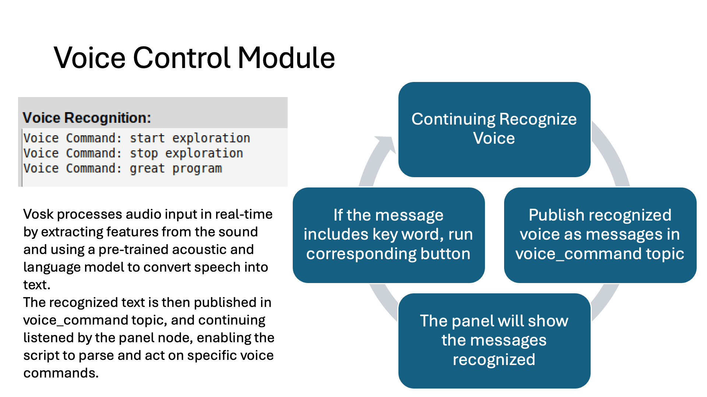

Smart Cleaning Robot Final Report
This is the final report of project Smart Cleaning Robot, in this report, you will know:
- Brief Introduction
- Core Algorithms
- Project Modules and Detailed Explanations
- Story Behinds the Project
And all other informations about the project.
Brief Introduction and Overview
Contributors
- Pang Liu: Panel Module, Voice Control, Cleaning Module II.
- Zhenxu Chen: Mapping Module, Cleaning Module I.
Key Features
This is a ROS-based autonomous cleaning robot that integrates indoor mapping, voice control, and innovative cleaning functionalities. This project features expandable modules, making it a valuable tool for research, education, and real-world applications.
Develope and Test Environment: ROS Noetic, Python3, Ubuntu 20.04.6
- GUI Control Panel: A user-friendly interface to manage all modules without command-line interaction.
- Voice Control: Real-time voice recognition for hands-free operation.
- Mapping: Efficient exploration and map saving using the Explore_Lite package.
- Cleaning: Two cleaning modules for full-coverage path planning, including a fully self-designed solution.
Demonstration
- Demo Link: https://jeffliulab.github.io/youtube_links/ros119.html Note: If the link expires, you can find youtube channel "JeffLiuLab" and see all related videos.
Problem Statement and Original Objectives
Background
With the rise of smart home technology, users now seek cleaning robots with greater autonomy and interactive capabilities beyond basic cleaning. Traditional cleaning robots face significant challenges in dynamic environments, such as avoiding obstacles or adapting to changes in the environment, and often lack the precision needed for complete coverage. This creates a gap in meeting user expectations for intelligent and efficient cleaning experiences.
Original Objectives
The project aims to develop a ROS-based cleaning robot that integrates autonomous exploration, complete coverage path planning (CCPP), and voice control. The following objectives were identified to address the problem:
- Enable Autonomous Indoor Exploration and Mapping: Utilize Simultaneous Localization and Mapping (SLAM) and Frontier-Based Exploration (FBE) algorithms to allow the robot to autonomously create a 2D map of an unknown environment.
- Design Complete Coverage Path Planning (CCPP): Ensure the robot can cover all accessible areas without missing or re-cleaning spaces, achieving efficient and thorough cleaning.
- Integrate Real-Time Obstacle Avoidance: Equip the robot with the ability to detect and avoid dynamic obstacles, such as pedestrians, ensuring smooth and safe cleaning operations.
- Build an Intelligent Interaction System: Develop capabilities to adjust cleaning strategies based on user commands, such as stopping and returning to the base, continuing cleaning, or remapping the environment.
- Establish an Expandable System Architecture: Design the system to be scalable, with interfaces for future module expansions such as mobile app control and smart feedback systems.
Original Goal
The overarching goal is to create a smart autonomous cleaning robot that can:
- Quickly explore and map the environment using SLAM and FBE algorithms.
- Plan and execute efficient cleaning routes for complete coverage.
- Recognize and respond to voice commands in real-time.
- Detect and avoid dynamic obstacles during operation.
This solution aims to overcome the limitations of traditional cleaning robots, providing users with a highly autonomous and interactive cleaning experience.
User Guide
Program Entry
To start the program:
- For Simulation:
Remember to set localhost settings in ~/.bashrc
No additional commands are required for simulation environment, this launch file handles all controls.
- For Real Robot:
Remember to set real IP settings in ~/.bashrc and update turtlebot3's settings.
For Real Environment, you need to run roscore on PC firstly:
Before bringup, if the environment has no Internet access, or no RTC module on turtlebot3, you need sync time.
For Real Environment, you need to ssh to turtlebot3 and bring up it secondly:
After above instructions, you can now run the panel to start the program:
After running, you must do following to avoid data loss or hardware damage:
Guide for build a test environment
This is also the environment of final demo at lab
For the final demonstration at lab, we will replicate a realistic cleaning scenario in a controlled environment. The setup ensures seamless communication and modular scalability, simulating a robust system for future multi-robot collaboration.
Hardware Configuration
- TurtleBot3 (Cleaning Robot)
- Role: A single cleaning robot performing mapping, exploration, and cleaning tasks.
-
Connectivity: Communicates with the central system via the router's local network.
-
No Internet Access Local Network Router (Network Center)
- Role: Acts as the network center to establish a local LAN for communication.
-
Features:
- Provides stable IP addresses for devices.
- Enables consistent communication across the network.
-
Computer with Linux OS (Computing Center and Control Terminal)
- Role: Acts as the central computing tower and the portable control panel.
- Running the GUI control panel (represents portable control panel).
- Managing mapping, exploration, and cleaning processes.
- Collecting and visualizing data in real-time.
Essential Algorithms (Self Designed)
This part introduces the essential algorithms and techniques built by ourselves.
Core Algorithms in Route Plan
The route planning in cleaning module II is implemented at a low level and without relying on move_base or other integrated ROS packages. This approach provides more flexibility and control over the cleaning coverage path. The main processing logic is:
- Map Preprocessing (Dilation Algorithm)
- Generate Sampling Points (Uniform Sampling)
- Find Valid Connections (Bresenham's Algorithm)
- Generate Complete Path (Greedy Algorithm)
- Visualization & Save (Arrow Path Visualization)
Note: The codes here are simplified and hide some lines to focus on algorithm ideas.
<1> Dilation Algorithm
- Use the dilation algorithm to expand the obstacle area.
- Calculate the safety distance based on the robot radius.
- Convert the map into a three-value representation: -1 (obstacle), 0 (not visited), 1 (visited).
def preprocess_map(self, map_array):
processed_map = np.full_like(map_array, MapData.OBSTACLE, dtype=np.int8)
# Set feasible area
processed_map[map_array == 0] = MapData.UNVISITED
# Expansion processing considering safety distance
safety_kernel_size = int(2.0 * self.robot_radius / self.grid_resolution)
safety_kernel = np.ones((safety_kernel_size, safety_kernel_size), np.uint8)
# Inflate obstacles and mark safe areas
obstacle_map = (processed_map == MapData.OBSTACLE).astype(np.uint8)
dilated_obstacles = cv2.dilate(obstacle_map, safety_kernel, iterations=1)
processed_map[dilated_obstacles == 1] = MapData.OBSTACLE
<2> Uniform Sampling
- Use a fixed interval to uniformly sample the feasible area.
- Convert the sampling point coordinates from grid coordinates to world coordinates.
- Assign a unique ID and status to each sampling point.
def generate_path_points(self, processed_map):
path_points = []
height, width = processed_map.shape
point_id = 0
# Generate waypoints using sampling interval
for x in range(0, width, self.SAMPLING_INTERVAL):
for y in range(0, height, self.SAMPLING_INTERVAL):
if processed_map[y, x] == MapData.UNVISITED:
world_x, world_y = self.grid_to_world(x, y)
path_points.append({
'id': point_id,
'grid_x': x, 'grid_y': y,
'world_x': world_x, 'world_y': world_y,
'status': MapData.UNVISITED
})
point_id += 1
<3> Bresenham's Algorithm
- Use Bresenham algorithm to generate all grid points between two points.
- Determine pixel position by error accumulation.
- Only use integer operations to improve efficiency.
def get_line_points(self, x1, y1, x2, y2):
points = []
dx = abs(x2 - x1)
dy = abs(y2 - y1)
x, y = x1, y1
sx = 1 if x1 < x2 else -1
sy = 1 if y1 < y2 else -1
if dx > dy:
err = dx / 2.0
while x != x2:
points.append((x, y))
err -= dy
if err < 0:
y += sy
err += dx
x += sx
<4> Greedy Algorithm
- Use a greedy strategy to select the next visit point.
- Prioritize the nearest unvisited point.
- Ensure that the path does not pass through obstacles.
- Handle disconnected areas.
def find_valid_connections(self, path_points):
connections = []
visited = set()
current_point = path_points[0]
visited.add(0)
while len(visited) < len(path_points):
best_distance = float('inf')
best_next_point = None
for i, point in enumerate(path_points):
if i in visited or not self.are_adjacent(current_point, point):
continue
if self.line_crosses_obstacle(current_point, point):
continue
distance = ((current_point['grid_x'] - point['grid_x']) ** 2 +
(current_point['grid_y'] - point['grid_y']) ** 2) ** 0.5
if distance < best_distance:
best_distance = distance
best_next_point = point
<5> Arrow Path Visualization
- Use heatmap to display map information.
- Use vector calculation to generate arrow paths.
- Use color mapping to display different states.
- YAML serialization to save path data.
def visualize_plan(self, processed_map, path_points):
display_map = np.full_like(processed_map, fill_value=1.0, dtype=float)
display_map[processed_map == MapData.OBSTACLE] = 0.8
plt.imshow(display_map, cmap='gray')
for point in path_points:
plt.scatter(point['grid_x'], point['grid_y'], c='red', s=30)
connections = self.find_valid_connections(path_points)
for point1, point2 in connections:
plt.arrow(point1['grid_x'], point1['grid_y'],
point2['grid_x'] - point1['grid_x'],
point2['grid_y'] - point1['grid_y'],
head_width=2, head_length=2, fc='blue', ec='blue', alpha=0.5)
Core Algorithms in Route Follow
Process Flow Initialization Load Path Points Start Route Following Loop:
-
Check localization accuracy
-
Find next target point:
Priority: follow planned route order
Fallback: find nearest accessible point
-
Check path safety (obstacle avoidance)
-
Move to target point:
First rotate to target orientation
Then move in straight line
-
Update point status (visited/obstacle)
-
Repeat loop until all points are completed
Special Features
- State Machine
Uses enumerated states (UNVISITED/VISITED/OBSTACLE) for point tracking
Enables systematic progress monitoring and recovery
- Visualization Capabilities
Real-time display of point status and path connections
Color-coded visualization for different point states
Path visualization with directional indicators
- Real-time Safety Monitoring
Continuous LiDAR data processing for obstacle detection
Dynamic path adjustment for obstacle avoidance
Safety distance maintenance for pedestrian protection
Configurable safety parameters for different environments
Note: The codes here are simplified and hide some lines to focus on algorithm ideas.
<1> Localization Accuracy Check
Verifies AMCL positioning accuracy to ensure reliable navigation.
def check_localization_accuracy(self):
if not self.current_pose:
return False, "No pose data"
return True, "Localization accuracy sufficient"
<2> Target Point Finding
Implements hierarchical point selection strategy - first tries planned route, then falls back to nearest accessible point.
def get_next_planned_point(self, current_point_id):
for start_id, end_id in self.path_connections:
if start_id == current_point_id:
for point in self.path_points:
if point['id'] == end_id and point['status'] == MapData.UNVISITED:
if self.check_path_safety(point) and self.is_point_reachable(point):
return point
return None
<3> Path Safety Verification
Uses LiDAR data to validate path safety by checking obstacle proximity.
def check_path_safety(self, target_point):
path_start = np.array([self.current_pose[0], self.current_pose[1]])
path_end = np.array([target_point['world_x'], target_point['world_y']])
path_vector = path_end - path_start
danger_points = 0
for obs_point in self.obstacle_points:
obs_vector = np.array(obs_point) - path_start
projection = np.dot(obs_vector, path_vector) / np.linalg.norm(path_vector)
if 0 <= projection <= np.linalg.norm(path_vector):
distance = abs(np.cross(path_vector, obs_vector)) / np.linalg.norm(path_vector)
if distance < self.SAFETY_DISTANCE:
danger_points += 1
if danger_points > 5:
return False
return True
<4> Reachability Check
Determines if target point is within maximum reachable distance.
def is_point_reachable(self, point):
distance = math.hypot(
point['world_x'] - self.current_pose[0],
point['world_y'] - self.current_pose[1]
)
return distance < self.MAX_REACHABLE_DISTANCE
<5> Movement Control
Implements two-phase movement: rotation alignment followed by linear motion.
def move_to_point(self, target_point):
while not rospy.is_shutdown():
dx = target_point['world_x'] - self.current_pose[0]
dy = target_point['world_y'] - self.current_pose[1]
distance = math.hypot(dx, dy)
target_angle = math.atan2(dy, dx)
if distance < self.POSITION_TOLERANCE:
self.stop_robot()
return True
angle_diff = target_angle - self.current_pose[2]
if abs(angle_diff) > self.ANGLE_TOLERANCE:
cmd_vel.angular.z = self.ANGULAR_SPEED if angle_diff > 0 else -self.ANGULAR_SPEED
else:
cmd_vel.linear.x = min(self.LINEAR_SPEED, distance)
cmd_vel.angular.z = 0.5 * angle_diff
Essential Modules
Module Structures:

1. Panel Module
- Developer: Pang Liu
- Description:
- Self-designed GUI for controlling all program modules.
- Provides buttons and voice control integration for seamless operation.
- Key Features:
- Start SLAM, exploration, and cleaning processes.
- Save and load maps.
- Route analysis and visualization in RViz.
- Robot movement control.
- Developer-friendly logs for debugging.
- Real running illustration:
Control Panel Buttons and Functions
- Build Map: Launches SLAM and RViz.
- Start/Stop Exploration: Begins or halts autonomous exploration.
- Save Map: Saves the current map to the
/mapsdirectory. - Analyze Route: Uses
route_plan.pyto plan paths based on the saved map. - Show Route: Visualizes the planned route in RViz.
- Start Cleaning: Executes the cleaning routine (based on the selected cleaning module).
- Robot Control: Allows manual control of the robot via
/cmd_vel. - Quit Program: Shuts down the system.
2. Voice Control Module
- Developer: Pang Liu
- Description:
- Real-time voice recognition using the Vosk model.
- Publishes recognized commands to the
voice_commandstopic. - Enables voice-activated control of exploration and cleaning.
- 
3. Mapping Module
- Developer: Zhenxu Chen
-
Description:
-
Based on the Explore_Lite package, customized for fast exploration and map saving.
-
Workflow:
-
Start SLAM: Launches
turtlebot3_slam.launchfor SLAM and RViz. -

-
Start Exploration: Begins autonomous exploration using
explore.launch. -
Visualization Markers:
- Blue Points (Frontier Exploration Markers)
- Technical Meaning: Valid frontier points indicating unexplored boundaries
- Simple Description: These points show the boundary between mapped and unmapped areas - like a border between known and unknown territory on a map. They are the potential areas for the robot to explore next.
- Red Points (Frontier Exploration Markers, Not showned on demo)
- Technical Meaning: Blacklisted frontier points that failed exploration attempts
- Simple Description: These are "no-go" areas that the robot tried to reach before but couldn't. Think of them like marking an X on a map where there might be obstacles or unreachable spots.
- Green Spheres (Frontier Exploration Markers)
- Technical Meaning: Initial points of frontiers, with sphere size inversely proportional to frontier cost
- Simple Description: These balls mark the starting points of unexplored areas. The bigger the ball, the more interesting that area is for exploration - like highlighting the most promising spots on a treasure map.
- Pink Path (Path Planning Markers, 0.05 width)
- Technical Meaning: Global plan from DWAPlannerROS (/move_base/DWAPlannerROS/global_plan)
- Simple Description: This is like the overall route plan on a GPS - it shows the complete path the robot plans to take from its current location to its destination.
- Yellow Path (Path Planning Markers, 0.03 width)
- Technical Meaning: Local plan from DWAPlannerROS (/move_base/DWAPlannerROS/local_plan)
- Simple Description: This is like watching your next few steps carefully - it shows the immediate path the robot plans to take while paying attention to nearby obstacles and adjusting its movement.

-
Save Map: Saves the map as
.pgmand.yamlfiles in the/mapsdirectory. -

-
Finish Mapping: Stops SLAM and exploration nodes.
4-1. Cleaning Module I
- Developer: Zhenxu Chen
- Description:
- Based on the CCPP package for full-coverage path planning and cleaning.
- Utilizes
move_basefor navigation. - Note:
<Cleaning Module I>is developed at branchbackup - CCPP Package: https://wiki.ros.org/full_coverage_path_planner
- The CCPP package will use saved map to plan a full coverage route and allow the robot following the route.
- Video: https://drive.google.com/file/d/1F1Hh0JKD9KMvRVsC_EX5ZwptzUVWLEi8/view?usp=drive_link
4-2. Cleaning Module II
- Developer: Pang Liu
- Description:
- Fully self-designed cleaning functionality split into two submodules:
- Route Analysis Submodule:
- Reads saved maps and analyzes routes using a three-value map (-1 for obstacles, 0 for uncleaned areas, 1 for cleaned areas).
- Plans paths using sampling intervals and a greedy algorithm to find valid connections.
- Route Follow Submodule:
- Executes the planned path, marking cleaned areas in real-time (still under debugging).
Sub Module I: Route Analysis
-
Detailed introduction of
route_plan.py(core script): -
Get the latest map (map data of
OccupancyGridmessage type) through/maptopic. -
Convert
OccupancyGriddata to a grid map represented by a NumPy array. -
Perform obstacle expansion on the map (taking into account the safety distance of the robot).
-

-
Generate a three-value map:
-1,0, and1are used to represent obstacles, unvisited areas, and visited areas respectively. - Generate path points in the map through a fixed sampling interval. Each path point includes world coordinates and grid coordinates.
-
Use greedy algorithm to find valid connections between path points and check whether there are obstacles between two points.
-
After the connection is completed:
-
Use
matplotlibto draw the path points and connected line segments and save them as an image. - The logic of finding valid connections:
- Each path point can only be connected to the path points adjacent to it.
- Definition of connection: up, down, left, and right.
- Isolated path points are not considered in the connection.
- Use RViz and route_show (button [Show Route]) to see the points and route:

Sub Module II: Route Follow
-
Main Logic
-
(1) Follow the route based on route_plan analyzed
- (2) When reach a red point, that point will turn to green
- (3) If the robot found the red point is not reachable, might be a wall, might be a moving obstacle, then the point will turn to black.
-
The full logic of
route_follow.py: -

-
black point demo:
-

-
red point turn to green point demo:
-


Codes and Files Explanations
Directory Structures
 Note: The Cleaning Module I (CCPP) is not in branch
Note: The Cleaning Module I (CCPP) is not in branch master, please see its implementation in branch backup. For this project final demonstration, we mainly use our self designed Cleaning Module II.
Directory and Scripts Table
| Folder/File | Description | Topics and Messages |
|---|---|---|
| maps/ | Store map files built by mapping module | |
| src/ | Main source code directory | |
| cleaning_bot/ | Explore lite package files | |
| control_panel/ | Control panel directory | |
| launch/ | Launch file directory | |
| panel_real.launch | Program entrance in real environment | |
| panel_sim.launch | Program entrance in simulation | |
| src/ | ||
| control_panel_gui.py | Main control panel program scripts | Subscribe: /voice_commands |
| Publish: /cmd_vel | ||
| Publish: /control_move_base | ||
| Publish: /control_explore | ||
| Publish: /control_gmapping | ||
| Publish: /control_amcl | ||
| Publish: /control_route_show | ||
| Publish: /control_route_follow | ||
| voice_vosk.py | Voice recognition program | Subscribe: control commands |
| Publish: /voice_commands | ||
| SLAM_controller.py | SLAM controller | Subscribe: /control_gmapping |
| AMCL_controller.py | AMCL controller | Subscribe: /control_amcl |
| move_base_controller.py | Move base controller | Subscribe: /control_move_base_controller |
| explore_controller.py | Exploration controller | Subscribe: /control_explore |
| controller_route_show.py | Route display controller | Subscribe: /control_route_show |
| controller_route_follow.py | Route following controller | Subscribe: /control_route_follow |
| vosk-model-small-en-us/ | Voice recognition model files | |
| simulation_world/ | Simulation environment directory | |
| sweep/ | Core cleaning directory | |
| config/ | RViz configuration files | |
| debug/ | Processed map files | |
| pathfiles/ | Path information files | |
| src/ | ||
| route_map_server.py | Supporting files for following scripts | |
| route_plan.py | Route planner | Subscribe: /map topic |
| route_show.py | Route visualization | Publish: /path_visualization |
| Publish: /path_connections | ||
| route_follow.py | Route following program | Subscribe: /amcl_pose |
| Subscribe: /scan | ||
| Publish: /cmd_vel | ||
| Publish: /route_status | ||
| Publish: /route_status_visualization | ||
| Publish: /current_path | ||
| turtlebot3/ | Turtlebot3 core files |
Story behinds the project
How Our Team Was Formed
At the beginning, we worked on our own projects separately. Pang was working on a project for a robotic guide dog, while Zhenxu focused on a floor-cleaning robot. Pang's project aimed to enable a robot to move indoors, avoid obstacles, guide visually impaired people to exits, and be controlled by voice commands. On the other hand, Zhenxu's project focused on autonomous map creation for the robot.
After the initial project setup, we had an in-depth discussion and quickly realized we could combine the features of both projects. We decided to create an autonomous floor-cleaning robot that integrates voice control and automatic mapping. Before the second project update, we worked together to create a proposal for the autonomous cleaning robot.
The initiative to undertake a cleaning robot project comes from a keen interest in delving deeper into ROS technologies. Cleaning robots encompass advanced concepts like SLAM, navigation, and control. Initially, we observed that SLAM typically requires manual control to let the robot move under commands. However, expecting users to manually control the robot is impractical. After researching various materials, we decided to implement frontier-based mapping to achieve autonomous mapping. The way to do so is to integrate the explore_lite package into our project.
For the sweeping phase, after saving the generated map, we initially considered leveraging existing packages such as full-coverage path planning. However, we ultimately chose to develop our own module instead of relying on pre-built solutions. This decision was based on the recognition that the sweeping module is the core component of our project, and building it ourselves aligns with our goals for innovation and mastery.
Our project progressed smoothly, largely because we invested in our own TurtleBot3, which minimized external interference from other groups. Throughout the development process, team members collaborated effectively, analyzing challenges and debugging together to ensure steady progress.
Assessments
Participating in this cleaning robot project has been a valuable learning experience and a rewarding challenge. We have gained deeper insights into advanced ROS technologies, such as SLAM, autonomous navigation, and control. This project pushed us to explore the intricacies of frontier-based mapping and the design of a custom sweeping module, alongside integrating an acoustic recognition module and UI design & implementation.
Developing the sweeping module from scratch was both challenging and fulfilling. It required us to think critically about the way to realize an effective algorithm to plan the path that enables the robot to cover all the explored areas, as well as how to integrate various components like the voice control module seamlessly. This hands-on experience improved our ability to analyze requirements, break down complex tasks, and implement practical solutions. Teamwork played a crucial role in our success. Our group demonstrated excellent collaboration and communication, which helped us overcome obstacles and refine our approach. Overall, it is a very successful project.
Chanllenges and Problem Solving
Our challenges mainly came from two aspects: integrating and adjusting existing packages, and designing custom code. The first type of challenge arose from the "black box" nature of many existing packages, which often caused unexpected conflicts. Fine-tuning the parameters was also particularly demanding and consumed a significant amount of time. The second type of challenge came from designing code almost entirely from scratch, which felt like building a house brick by brick on our own.
The primary challenge in integrating frontier-based autonomous mapping lies in tuning the numerous parameters associated with local and global path planners, move_base, SLAM, and exploration modules. The huge volume of these parameters makes it time-consuming to achieve satisfactory results in Gazebo simulations. However, even after extensive tuning, the outcomes in the real-world environment often fall short of expectations.
To address this, we plan to use teleop commands during the real robot demonstration to assist with mapping, particularly in situations where the robot becomes stuck during the autonomous mapping process. This approach ensures smoother operation while we continue refining the autonomous functionality.
The biggest challenge in coding stage came from designing the autonomous algorithm for the floor-cleaning robot. From planning the program flow to writing pseudocode, implementing the final code, integrating it, and debugging, we faced numerous difficulties. Transitioning from simulation to the real robot also presented significant challenges.
One issue worth highlighting involved problems that didnt appear in simulation but arose in the real-world application. Since we built our own robot and used our custom Ubuntu system instead of the schools VNC setup, we encountered various unexpected connection errors. Eventually, we identified the root cause as a time synchronization issue. We used a standalone router to connect the computer and the robot, but the Raspberry Pi 4B lacks an RTC (Real-Time Clock) module, so the system time didnt update after booting. To resolve this, I configured the computer as a time synchronization server and set up a time synchronization mechanism on the TurtleBot3s system.
Another issue involved the LiDAR. During simulation testing, the robot performed flawlessly. However, in the real-world setup, it couldnt follow the path to clean effectively. We eventually discovered that the LiDAR data contained many points with a value of 0, which werent handled properly. Since all the code for the cleaning module II was custom-designed without relying on existing packages like move_base or gmapping, we encountered these fundamental but critical problems.
The turtlebot3 we built:

Relevant Literature and References
Related research, tutorial and reference for algorithms:
- Frontier Based Exploration: chrome-extension://efaidnbmnnnibpcajpcglclefindmkaj/https://arxiv.org/pdf/1806.03581
- Dilation Algorithm: https://homepages.inf.ed.ac.uk/rbf/HIPR2/dilate.htm
- Greedy Algorithm: https://en.wikipedia.org/wiki/Greedy_algorithm
- Bresenham's Line Algorithm: https://en.wikipedia.org/wiki/Bresenham%27s_line_algorithm
- Mapping, localization and planning: chrome-extension://efaidnbmnnnibpcajpcglclefindmkaj/https://gaoyichao.com/Xiaotu/resource/refs/PR.MIT.en.pdf
Technical reference for integration and structures:
- ROS Frontier Exploration: https://wiki.ros.org/frontier_exploration
- ROS Explore Lite: https://wiki.ros.org/explore_lite
- VOSK: https://alphacephei.com/vosk/
- ROS Full Coverage Path Planning: https://wiki.ros.org/full_coverage_path_planner
- Turtlebot3: https://emanual.robotis.com/
- OpenCV: https://opencv.org/
Future Plans
- Optimize the Route analyze and Route Follow submodule.
- Open-source the project to foster collaboration on smart cleaning robot innovations.
- Create a tutorial for building autonomous cleaning robots step-by-step.
- Expand the frontier exploration module with self-designed algorithms.
Special Thanks
I would like to express my heartfelt gratitude to Professor Pito Salas and the Course 119 team and classmates for introducing me to the field of robotics and helping me rediscover my passion from earlier years. Professor Salas has been incredibly dedicated to supporting students in learning practical skills, going above and beyond to create a rich learning environment. His efforts include inviting industry professionals to share insights on the latest developments in the field.
119 course has rich resources on helping us explore ROS and other things. Heres one of my favorite picture captured from the course: